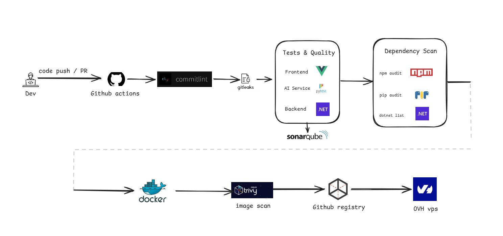
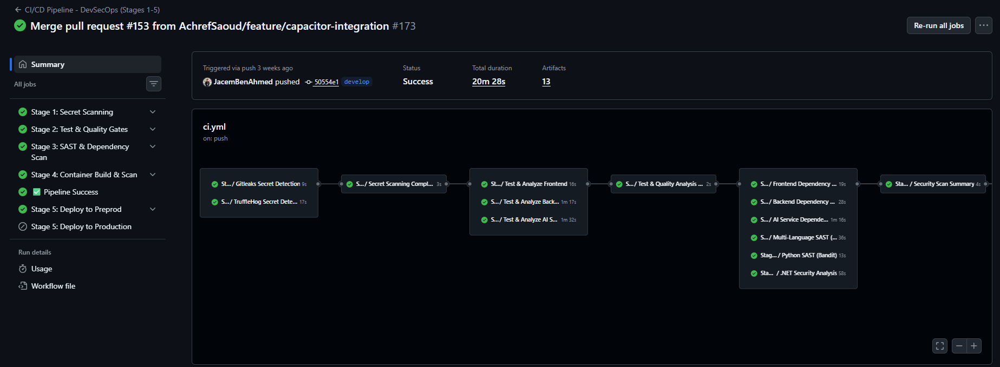

Multi-tenant Enterprise Architecture
Organizations, users and roles with full authentication, authorization, RBAC and secure org-level data isolation.
Evalia
Final-Year Engineering Project
AI-powered enterprise evaluation platform
An end-to-end SaaS for creating, managing, publishing and analyzing technical assessments — transforming documents into questions and candidate attempts into actionable insights.

Evalia was built to solve a real problem: assessment workflows are fragmented — questions scattered across documents, evaluations assembled by hand, results analyzed manually, and nothing that scales across organizations.
Manually built assessments
Creating evaluations from existing training material and knowledge bases is slow, repetitive and error-prone.
Fragmented results
Scores live in spreadsheets; performance insights and recommendations rarely surface back to the organization.
No multi-tenant foundation
Existing tools don't isolate data per organization or support role-based access across a growing client base.
Unreliable online exams
Without anti-cheat controls, remote assessments can't be trusted for formal evaluation scenarios.
The complete Evalia lifecycle
Eight capability areas that together form a serious, production-minded assessment ecosystem.
Organizations, users and roles with full authentication, authorization, RBAC and secure org-level data isolation.
Questions organized by themes, sub-themes, difficulty and prerequisites — QCU, QCM and True/False formats.
Upload a document, and the AI pipeline turns it into relevant, ready-to-use assessment questions.
Assemble sessions from the bank, configure parameters and publish through a public link for candidates.
Scores, performance, question-level breakdowns and candidate progression across evaluations.
AI analysis of results that surfaces useful, actionable recommendations from performance data.
Detects page-leave and tab-switch events and triggers configurable behavior, up to attempt invalidation.
A Vue.js + Capacitor app extending the evaluation experience to mobile with native Android integration.
A retrieval-augmented generation pipeline transforms existing documentation and training material into assessment content.
Document
PDF · DOCX · text
OCR / Text Extraction
scanned & digital
Chunking
semantic segments
Embeddings
all-MiniLM-L6-v2
Vector DB
ChromaDB
LLM
context-aware
Generated Questions
review & publish

AI generation — upload a document and let the pipeline produce relevant questions for review before they enter the bank.
Documents pass through OCR and text extraction, are split into semantic chunks, and converted into vector embeddings stored in ChromaDB. The LLM then retrieves the most relevant content and generates questions grounded in the source material.
From authoring questions to delivering reports — the complete assessment flow lives inside a single platform.
Create Questions
manual or AI-assisted
Build Evaluation
from the question bank
Publish
shareable public link
Candidate Takes Test
with anti-cheat
Results
scores & performance
Reports
insights & recommendations
Hover any component to see how it fits. Three views — web application, AI service and containerized infrastructure.
Application stack — Docker Compose
Delivery pipeline
Security isn't an afterthought — it's enforced at every stage of a fully automated delivery pipeline.
Code
feature branch → PR
Quality Checks
CommitLint · analysis
Security Scanning
secrets · deps · SAST
Docker Build
image scanning
Container Registry
GitHub Container Registry
Deployment
Ubuntu VPS · Docker Compose

Pipeline design — code flows through quality checks, security scans and container builds before reaching production.

GitHub Actions — automated code quality, secret detection, dependency checks, vulnerability scanning, image scanning and deployment.
A Capacitor mobile app extends the assessment experience to Android while reusing the existing Vue.js stack.

Evalia's mobile experience is built with Vue.js and Capacitor, wrapping the existing web technology stack into a native-feeling Android application. Capacitor plugins bridge the JavaScript layer with native mobile capabilities, so candidates can complete assessments wherever they are.
Vue.js components and logic are packaged for mobile — one codebase, two platforms.
Capacitor plugins integrate native capabilities with the Vue.js application layer.
Authentication, anti-cheat detection and result submission behave identically to the web app.
A walkthrough of the platform — click any screenshot to view it full size.


A complete walkthrough of the platform — from organization setup to AI-generated questions, evaluations and reports.
Video hosted on OneDrive — open it in a new tab if the player doesn't load.
The engineering decisions that made Evalia feel like a real product rather than a demo.
The challengeMultiple organizations on one system, each needing guaranteed data isolation.
The solutionTenant scoping enforced at every data access layer, combined with organization-aware RBAC across the whole API.
The challengeTurning arbitrary documents — scanned and digital — into structured, reliable assessment content.
The solutionAn orchestrated pipeline: OCR, text extraction, chunking, embedding, retrieval and LLM generation, with results surfaced for human review.
The challengeThe LLM needed the right content — not just the largest chunk — to generate good questions.
The solutionVector search with all-MiniLM-L6-v2 embeddings and ChromaDB so generation is grounded in the most relevant source material.
The challengeKeeping vector data consistent with the platform's relational domain data.
The solutionA dedicated FastAPI service owns the ChromaDB lifecycle, keeping collections aligned with the .NET backend through clear API contracts.
The challengeDifferent roles — admins, trainers, candidates — accessing different parts of the platform.
The solutionToken-based authentication with role-based access control and org-level scoping enforced by the API for every request.
The challengeMaking remote, unsupervised assessments trustworthy enough for formal use.
The solutionVisibility-change and tab-switch detection that triggers configurable anti-cheat behavior, including automatic attempt invalidation.
The challengeShipping updates confidently without letting vulnerabilities through.
The solutionA GitHub Actions pipeline running commit conventions, secret detection, dependency audits, SAST/DAST and container image scanning before every deployment.
The challengeExtending a web platform to mobile without building a separate app from scratch.
The solutionCapacitor wrapped the existing Vue.js stack into an Android app, with native plugins bridging browser APIs to device capabilities.
Combining a modern multi-tenant SaaS architecture, intelligent document-to-question generation, evaluation management, analytics, DevSecOps practices and a mobile application, Evalia is built to be presented to engineering recruiters and technical leads as a real product.